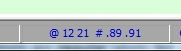
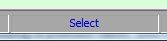

Working with Line Labels
Contents of Article
Relative label ranges with AND and OR
Temporary line labels, also known as line-number pseudo labels
Using the single character line range arguments
Using Labels and Tags with the LINE Command
A handy key mapping using a label for a placeholder
Users of SPFLite and/or ISPF are familiar with line labels. A line label is a . dot followed by one or more letters, and appears in the sequence area.
Note: The line number sequence area size on the edit screen is adjustable from 5 to 8 positions. This means the maximum size of a label or tag that you can type into a sequence area is from 4 to 7 letters, after the leading dot or colon. Internally, SPFLite maintains an 8-position sequence area, and only displays as much as will fit.
This means that labels and tags on the primary command line can actually use the maximum internal size (a dot or colon plus up to 7 letters). When you do this, only part of the label or tag is displayed, but the entire value is present. That should not pose a problem if the labels are being managed by macros, but if you enter such labels manually, be careful you don't confuse yourself, since you won't see the entire label displayed on the edit screen.
Labels are associated with the data line itself, not the particular line number they are on at the moment. So, if lines are inserted or deleted prior to the labeled line, or if the labeled line itself is moved, the label stays with the line. If there are two lines, one with label .AA and one with label .BB, ISPF allows you to issue primary commands like this:
CHANGE ABC DEF ALL .AA .BB
and all lines from .AA to line .BB, inclusive, will be changed. It doesn't matter if .AA comes before .BB or vice versa; the CHANGE will work the same way.
If you only want to change a single labeled line by itself in ISPF, you have to repeat the label, like this:
CHANGE ABC DEF ALL .AA .AA
but SPFLite allows the second label to be omitted if it's the same as the first. So the same thing can be done with just:
CHANGE ABC DEF ALL .AA
There are several "special" line labels that are available:
.ZFIRST (or .ZF) to indicate the first data line of the file
.ZLAST (or .ZL) to indicate the last data line of the file
.ZCSR to indicate the line in the data area where the cursor is located
.ZFIND to indicate the last (most recent) line found by a FIND command
.ZLOC to indicate the last (most recent) line found by a LOCATE command
For .ZCSR, the cursor must be on a data line (or the sequence area of a data line) in the edit screen.
For .ZFIND and .ZLOC, you must have issued at least one prior FIND, CHANGE or LOCATE command for the current file.
Otherwise, it is illegal to use these three special line labels, and you will get an "undefined label" error message if you try.
The handling of the .ZCSR special label is mostly compatible with ISPF. If you use .ZCSR in ISPF when the cursor is not in the data area, the line is simply not found (the ISPF FIND and CHANGE commands will simply report Bottom of Data) rather than reporting an error. This minor difference should not pose any difficulties for you.
A relative label defines a region of lines in the edit file with respect to a label. You could say that a simple label itself defines a basic region consisting of the very line that the label is on. There are now additional regions available, using the following syntax:
.ABC the line .ABC
.\ABC or .<>ABC or .¬ABC all lines other than line .ABC
.>ABC all lines after line .ABC
.>=ABC the line .ABC and all lines after it
.<ABC all lines before line .ABC
.<=ABC the line .ABC and all lines before it
Because of these definitions, it turns out that, individually, .>=ZF and .<=ZL both mean the same as .ZF .ZL, which is the entire file.
You may have noticed that when you issue a command like CHANGE ABC DEF ALL .AA .BB, the line range you are implying is the same as .>=AA .<=BB if you were to use the notation above. When you use two relative labels in a command, there are some order-dependency considerations to keep in mind for them to work correctly:
- When two labels are present and a label of the form .>ABC or .>=ABC is present, it must be the first label.
- When two labels are present and a label of the form .<ABC or .<=ABC is present, it must be the second label.
- When a label of the form .\ABC or .<>ABC or .¬ABC is present, it must stand alone; there cannot be a second label on the command.
When two labels .ABC and .DEF are defined, and you want to use them on a command such that one is a regular label and one is a relative label, one of the following forms must be used (in this order):
.ABC .<DEF same as .>=ABC .<DEF
.ABC .<=DEF same as .>=ABC .<=DEF
.>ABC .DEF same as .>ABC .<=DEF
.>=ABC .DEF same as .>=ABC .<=DEF
Relative label ranges with AND and OR
There may be times when you don't wish to be limited by the order dependency issue discussed above. Assume that .AA precedes .BB in the file. Then, the range .>AA .<BB actually defines an intersection of lines, in which all lines that are both after line .AA and before line .BB are intended. You can explicitly show this in SPFLite with the command:
CHANGE ABC DEF ALL .>AA AND .<BB
The AND keyword is actually allowed in SPFLite, but it's always assumed if you don't say it.
Now, if you had a 300-line file, with .AA on line 100 and .BB on line 200, then .>AA .<BB represents the “interior” of the file from lines 101 to 199. Suppose you wanted to reference the “outer edges” of the file; that is, all lines other than these lines? It would be as if you were to say,
CHANGE ABC DEF ALL NOT ( .>AA .AND <BB ) -- illegal syntax
However, SPFLite doesn't support a NOT operator, or line ranges in expressions. Suppose you tried to use the ranges without any options, like this:
CHANGE ABC DEF ALL .<=AA .>=BB
Since the AND option is assumed, and since .AA is before .BB in the file, there isn't a single line in the file that would meet both of these requirements at the same time, and so no lines would be changed.
If .AA is on line 10, and .BB is on line 20, then the line range .<=AA .>=BB is asking for all lines where the same line number is both <= 10 and >= 20, at the same time. That would be a neat trick if you could do it. SPFLite isn't that tricky, and so it will report Line range illogical, represents 0 lines.
What SPFLite does have is an OR facility, which defines a union of lines that meet either one of two conditions. Let's rewrite the command above:
CHANGE ABC DEF ALL .<=AA OR .>=BB
Like all keywords in SPFLite, the AND and OR are case-insensitive.
Now, we have a line range consisting of two independent ranges. This command will change any lines found either in the range of 1 to 100, or in the range of 200 to 300, in our example.
Note that when AND is either used or implied, the order of your labels doesn't matter (it has to be that way to be ISPF compatible). That means the regular labels you are used to, like .A .B mean the same as .B .A just like always.
This lack of order dependency only applies when both labels are regular labels like .A and .B. When one or both of these labels are relative labels like .<A, .<=B, .>C or .>=D, the ordering rules described above apply.
When OR is used, the line number associated with the first label must be before the line associated with the second label. This is a safeguard to make sure the line range you specify makes sense.
Temporary line labels, also known as line-number pseudo labels
Sometimes you may need to use a command like CHANGE on a known range of line numbers, but the CHANGE command doesn't accept actual line numbers as operands to indicate line ranges. There are other ways to do it, but often what happens is that you end up doing this:
- Temporarily place one-time labels like .A and .B on the ends of the desired range
- Issue the CHANGE or other command, referencing .A and .B
- Go back and get rid of the temporary labels .A and .B
Suppose you knew ahead of time that the .A label will go on line 100, and the .B label will go on line 200. With SPFLite you no longer have to “invent” these .A and .B labels. You can use temporary line labels, also known as line-number pseudo labels. Such a pseudo label is a . dot followed by a line number. The line number is handled numerically, not as a string. So, for example, a pseudo label of .100 or .00100 both refer to the same line.
You can use a pseudo label in commands just like a real one, including relative labels such as .\100 and .<100.
The only restriction is that if you attempt to RESET LABEL using a pseudo label, you can't really reset the label itself, since there is no actual label called .100. What happens is that if you issue the command RESET LABEL .100 it will remove any ordinary label that might happen to exist on line 100.
A pseudo-label like .100 is not a real label, and never exists in the sequence area of a data line, so there is no need to issue a RESET command to get rid of it. There is no label needing to be blanked out.
Using the single character line range arguments.
When text is selected using mouse drag or via the keyboard Shift-Arrow keys, a block of text is defined and highlighted on the screen. The line and column range of this selected area is remembered and can be used to quickly re-select the area for further processing if desired.
When an area is selected, the line and column references of the area are displayed in a Status Bar box for reference. That portion of the Status Bar would appear as

where the @ and the two numbers following represent the column range of the selected area, and the # and the two operands following represent the line range of the selected text.
The significance of the @ and # characters is both to identify which pair of numbers is which, but also to remind you that these single character values can now be used on the Primary command line for commands that accept line/column range operands.
For example, using the above displayed sample, a command line of PRINT # would be treated as if it were entered as PRINT .89 .91 to print the selected line range.
A change command CHANGE AAA BBB @ # would be treated as CHANGE AAA BBB 12 21 .89 .91. i.e. Change AAA to BBB on lines 89 to 91 between columns 12 and 21.
The values displayed are persistent and will remain available for repeated use on commands until a new, replacement text selection is made or a RESET command is issued..
Suspending the Range
You may temporarily suspend the @ and # processing on the command line by simply left-clicking on the Status Bar box displaying these values. When you do the box will switch to

This display indicates that an area has been selected and is currently inactive. At this point use of @ and # on the command line will not trigger substitution of line/column values.
A left-click on this box at this point will switch back to the normal select display, and will also re-select the text area on the screen for confirmation.
Using Labels and Tags with the LINE Command
You can manage line labels and line tags using the LINE primary command. For example, to put a label of .ABC on line 10, you can issue the command:
LINE '.ABC' .10
Remember to quote the label, because in this example, the first operand '.ABC' is what goes into the sequence area, and the second operand .10 is where the first operand is placed.
When doing a normal edit, there is usually no need to do such a thing; you would just put the label on the line directly. However, when running a programmable macro the LINE primary command is the only way to do this. You would need to 'wrap' the LINE primary command in an SPF_CMD function call in your .MACRO file, like this:
SPF_CMD ("LINE '.ABC' .10")
It is possible to set, clear and toggle both line labels and line tags from the LINE primary command. The possible options are as follows:
LINE '.label' -- Enter label into sequence area
LINE '..label' -- Toggle label; enter label if no label present,
-- else clear any label that is present
LINE '.' -- Clear any label that may be present
LINE '..' -- Clear any label that may be present; same as LINE '.'
LINE ':tag' -- Enter tag into sequence area
LINE '::tag' -- Toggle tag; enter tag if no tag present,
-- else clear any tag that is present
LINE ':' -- Clear any tag that may be present
LINE '::' -- Clear any tag that may be present; same as LINE ':'
See LINE - Apply Line Command and Working with the LINE Primary Command for more information on the LINE command.
See Special Line Commands in Using the KEYMAP Dialog for more information on performing these same actions within a KEYMAP definition.
A handy key mapping using a label for a placeholder
Here is a simple technique using line labels you might find useful. Often you may need to remember where you were in some particular location in a file, then do something which changes the location or appearance of the screen, such as a FIND, LOCATE or perhaps a RESET after an EXCLUDE command has hidden data in several locations. You would then like to get back to where you were.
The technique works like this. You map the Alt 3 key to "make a note" of where you had been in the file, and you map Alt 2 to go back to where you were at previously. Since the '3' key has the # pound sign (also called the 'note sign') and the '2' key has the @ At sign, you can use these two keys to help you remember what each of these keys are for. (It is kind of a pun - but it's also an effective way to remember them.)
The mappings are as follows. The technique uses Alt 3 to set (or clear) a label of .NOTE, and Alt locates that .NOTE and aligns the screen so the label is at the top of the display.
Alt 2 = LOCATE .NOTE TOP
Alt 3 = (CondLineNo){..NOTE}
For Alt 3, the (CondLineNo) function allows the setting of the .NOTE label even when the cursor is on the primary command line; if so, the label is set on the first data line of the display. The {..NOTE} will store a label of .NOTE if no label is present on the cursor line, or will clear it if one is already there.
Created with the Personal Edition of HelpNDoc: Produce Kindle eBooks easily